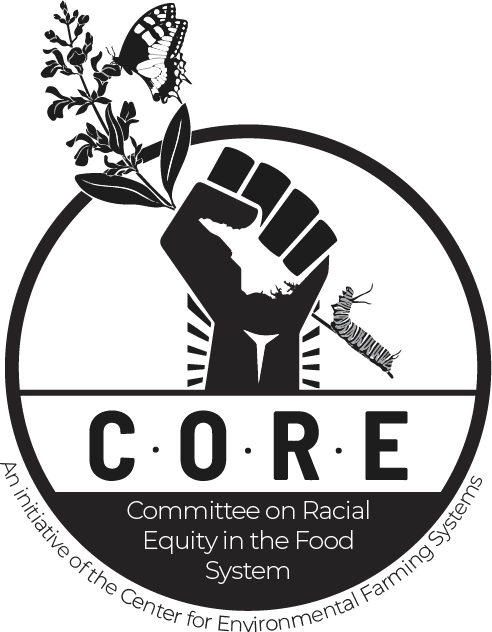
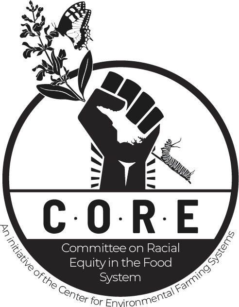
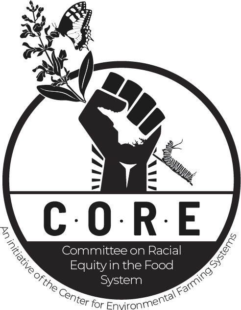

Uproot Zine was curated by Jett Pavlica and Celia Ruley, the design team at DurmPAC.
This digital edition of the zine was designed and realized by Jett Pavlica.
The print edition of the zine was designed and realized by Celia Ruley.
Loading Uproot Digital Zine...
In this phrase, Hip Hop icon Mos Def points to the importance that our artists have in engaging in social critique. Our own BIPOC communities have utilized art as a therapeutic way to release emotions, relate to one another, and survive and heal trauma. Our communities create and share art in direct response to economic, social, political, and personal harm; our artists use different forms of expression to take control of narratives, assert a community identity to outsiders, and find catharsis and healing. In conjunction, community-based art, cultural centers, and nightlife also contribute to our community’s sense of place, belonging, and safety within our intersecting identities. Art as activism often interprets and morphs traditional art practices into new ways to express ideas, frustrations, and identities.
Art-based research is an umbrella term for methods used by qualitative researchers to understand and address multifaceted and complex issues through creative arts; these methods can be implemented across the research process, including data collection, analysis, interpretation, and representation.
For our research team, understanding historically marginalized communities and their experiences within the food systems was our core inquiry. We wanted to engage our community in forms of artmaking as a therapeutic practice that can help our communities’ well-being, but also as a critical mode of research, especially in food systems and food justice work.
NorthStar Church of the Arts is a multidisciplinary artist led 501(c)3 nonprofit organization. Their mission is to harness the transformative power of art for social change, with a steadfast commitment to centering creative spiritual expression and fostering deep healing for artists of color. Housed in a historic church originally designed for the deaf community, the organization is a sanctuary for marginalized creatives. NorthStar stands as an illuminating nexus that expands its historical roots, providing holistic material support for artists and cultivating a safe haven for cross-cultural collaboration and community engagement.
Use the side buttons or arrow keys to view pieces displayed at Northstar Church of the Arts.
Renzo Ortega
The Tragedy of The Corn (2019)
Acrylic and soil on canvas
The Earthseed Land Collective is a community of Black and Latinx people working together on 48 acres of land in Durham, North Carolina. The collective was founded in 2012 and is inspired by Octavia Butler's Parable series, which tells the story of a religion established in the midst of a dystopian social collapse. The members of Earthseed are committed to developing the relationships and practices necessary to remember and reimagine their relationship to themselves, each other and the land in pursuit and practice of collective liberation.
Use the side buttons or arrow keys to view pieces displayed at Earthseed Land Collective.
Bevelyn Ukah
Heirloom, (2024)
Acrylic, markers, ink
Studying food systems, nutrition, and public health in a Western academic setting detached me from my ancestors, the land, and my body. There’s a connection we have with each other that can’t quite be measured in traditionally Western science methods. Black, Indigenous, and Eastern communities have always understood and honored this interdependence between land, food, body, and spirit. Creating and experiencing other people’s art–through movement, visual art, music, and food–is integral to understanding our individual and collective experiences.
UPROOT has been a way to honor ourselves and our communities, to find and create spaces of grief, joy, and celebration, and to dream of a more equitable future. These works explore living in a food apartheid, creating resiliency through mutual aid, and finding solace in the art of nature. It has truly been an honor to work and connect with this community of artists, and to share space with each other.
Niesha Douglas
Community-Based Research Scholar
Niesha is a community-based Research Scholar for the Center for Environmental and Farming Systems at North Carolina State University studying food systems in rural southeastern North Carolina.
Santos Flores
Lead Researcher
Santos Flores is an associate researcher, professor, data analyst and cultural educator with an interest in models of conflict transformation and social justice for application in community engagement.
Daphne Hines
Communications Specialist
Daphne is a Communications Specialist and Social Advocate with a focus on strategy, digital marketing, community engagement, and amplifying community voices for greater societal equity & wellness.
Isabel Lu
UPROOT Co-Curator
Isabel Lu is a painter and researcher based in Raleigh. Isabel studied nutritional science at Cornell University and then public health and dietetics as a graduate student at UNC Chapel Hill.
Bevelyn Ukah
Director of CORE &
UPROOT Managing Director
Bevelyn Afor Ukah is a consultant, facilitator, and self-taught mixed media artist, born and raised in Atlanta, Georgia, within a multicultural Black, Nigerian American family. Her life’s work focuses on exploring cultural connections and fostering equity through art and community engagement.
Nori McDuffie
UPROOT Head Co-Curator
Nori is an interdisciplinary artist whose work beautifully expresses his love, admiration, and reverence for Black culture, tradition, performance, spirituality, ephemera, and the human experience. Nori is also the Project Facilitator for Durham Powerful Arts Collective (DurmPAC).
Celia Ruley Donnelly
Designer & Illustrator
Celia is an illustrator and designer from Durham, North Carolina. She is currently based in Richmond, Virginia, where she makes comics and cooks dinner for her friends.
Jett Pavlica
Designer
Jett Pavlica (b. 2000, they/them) is a computational artist from Durham, North Carolina exploring classic algorithms, physical simulations, and generative organic forms while creating public art events in their hometown.
Uproot Zine was curated by Jett Pavlica and Celia Ruley, the design team at DurmPAC.
This digital edition of the zine was designed and realized by Jett Pavlica.
The print edition of the zine was designed and realized by Celia Ruley.